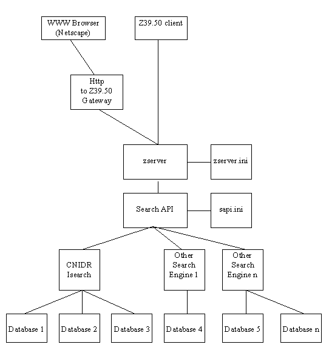
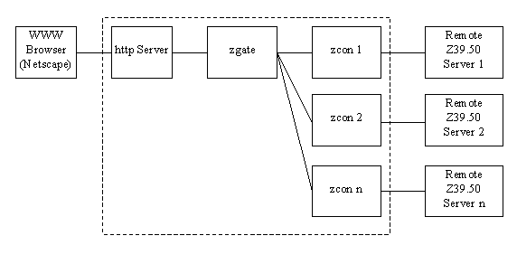

This material is based on work sponsored by the National Science Foundation under Cooperative Agreement No. NCR-9216963. The Government has certain rights in this material.
Any opinions, findings and conclusions or recommendations expressed in this publication are those of the author(s) and do not necessarily reflect the views of the National Science Foundation.
The Clearinghouse for Networked Information Discovery and Retrieval (CNIDR), through the National Science Foundation Cooperative Agreement NCR-9216963 and support from MCNC, formerly the Microelectronics Center of North Carolina, continues development and maintenance of Isite, a complete Internet information system. Isite integrates database systems with other open Internet systems and protocols such as the World Wide Web, Gopher, electronic mail and, primarily, ANSI/NISO Z39.50. The primary protocol, Z39.50, offers a variety of search and retrieval facilities suitable for complex database operations. Isite includes Z39.50 communications applications as well as an http to Z39.50 gateway and a complete text search system, Isearch. See figure 1 for an overall architectural view.
Isite is freely available for all use subject to the copyright statements in Appendix A.
The software may be downloaded from the Internet via the file transfer protocol (FTP) from the host ftp.cnidr.org. After connecting, change to the /pub/NIDR.tools/Isite directory and read the README file. Change to binary mode and download the latest copy of either the source code or the binaries. The URL is
ftp://ftp.cnidr.org/pub/NIDR.tools/Isite/
After downloading, you must unzip the compressed package. If the filename ends in .gz, the file was compressed with GNU's gzip compression utility. To unzip a gzipped package, enter the command
gunzip Isite-x.xx.tar.gz
If the filename ends in .Z, the file was compressed with the standard UNIX compression utility. In that case, uncompress with the command
uncompress Isite-x.xx.tar.Z.
You should then have a file of the form Isite-x.xx.tar. To untar the file, enter the command
tar xvf Isite-x.xx.tar
A subdirectory will be created named Isite-x.xx and all Isite-related files will reside in that subdirectory.
The source code requires a C++ compiler (GNU g++ preferred) to build. For more information on building the source code, read the README file in the Isite-x.xx directory.
Maintenance of an Isite information system requires the maintenance of the CNIDR Search API and the CNIDR Z39.50 server, zserver.
Many applications require access to text searching facilities and database systems. In response to this general need, CNIDR has developed a Search API (SAPI) which attempts to generalize access to arbitrary database systems via a common API. Any application that links with this API, therefore, inherits the functionality of any database system that may reside "behind" the API.
To the system administrator, this requires you to maintain one or more text files that describe which databases are currently available, their location on the file system, etc. By keeping this information up to date, all applications on your system designed to use the Search API will always have dynamic access to those databases.
Installation of the SAPI involves creating a single text file, known as the SAPI Configuration File, in a convenient location on your file system. Name the file sapi.ini and store in a location accessible by any SAPI-compliant applications (such as zserver). You will later need to inform each SAPI- compliant application of the sapi.ini file's location in the manner prescribed by each application.
The remainder of this chapter describes the format of the SAPI configuration file.
In general, the SAPI Configuration File describes each database available through the API to SAPI compliant applications. Among other information, this file identifies the type of database and the location of the database on the file system. This file has the general form:
[Group1] Directive1=Value Directive2=Value [Group2] Directive1=Value Directive2=Value ...
The file is separated into named Groups of information. Each Group has a series of Directives and associated Values.
Let's take a quick, high-level look at an example sapi.ini file. We will discuss this file in more detail later.
[Default] DBList=CATALOG,ERIC [CATALOG] Type=ISEARCH Location=/local/databases [ERIC] Type=SCRIPT Location=/usr/local/bin/ManPageSearch Results=/tmp/results
The first mandatory Group, named "Default", is where general information about the Search API itself is described. Currently, there is only a single directive defined for that Group, the DBList directive. The DBList directive lists all databases accessible via the SAPI by name.
In the example, the DBList directive indicates that two databases are available for searching; CATALOG and ERIC.
For each database name in the DBList, you must create a Database Information Group. In each Database Information Group, you must specify at least a database Type and Location and, depending on the search engine type, a Results directive.
There are currently two Types of search engines supported by the SAPI: ISEARCH and SCRIPT.
ISEARCH is the default search engine written and maintained by CNIDR. It provides relevance ranked, full text searching as well as Boolean, fielded searching.
The SCRIPT "search engine" is really a mechanism for calling scripts or other external applications for search and retrieval.
In our example above, the first Database Information Group, CATALOG, has a Type of ISEARCH, meaning the database was indexed using the Iindex utility from the Isearch package. We will discuss the other directives in the section on the ISEARCH search engine below.
The second Database Information Group defines ERIC to be a database of type SCRIPT. More information on the SCRIPT directives are discussed in the section on the SCRIPT search engine below.
The SCRIPT search engine was initially developed simply to test the Search API. However, we felt that others might find it useful, so we left it in.
The purpose of the SCRIPT search engine is to allow system administrators to offer new, interesting databases quickly and easily without having a specific database system or tool and without having to extend the source code of Isite.
We chose to implement this by describing a simple interface between the Search API and external applications. There are three components involved in this interface: The Database Information Group, the external application and the results file.
A Database Information Group is an entry in a sapi.ini file that describes a database. For SCRIPT-type databases, the database information group must have the directives Type, Location and Results. Consider:
[ManPages] Type=SCRIPT Location=/usr/bin/ManSearch.sh Results=/tmp/results
In this example, the database name is ManPages and the database type is SCRIPT. For SCRIPT type databases, the Location directive is mandatory and specifies a fully-qualified pathname of an external application or shell script. The Results directive is also mandatory and acts as a prefix for a temporary storage file for the results of the search. When the Search API receives a request to search the ManPages database for a term of 'strcmp', for example, it constructs a command of the form:
/usr/bin/ManSearch.sh /tmp/results.<pid> strcmp[attr1,value1,…]
and executes that command with a system() call. Therefore, the calling of a SCRIPT search engine is quite simple, however the results file must be structured to allow the Search API to read the search results.
The Results file must be adhere to the following format:
[Default] HitCount=1 Diagnostic=0 Separator=##separator string - your choice## [Data] Record data for record number 1 ##separator string - your choice## Record data for record number 2 ##separator string - your choice## Record data for record number 3
If the Results file is not of this format, you can expect unexpected results! The file begins with a group named "Default". Within the Default group, "HitCount" is the number of documents matching the user's query and available for retrieval. As of this writing, "Diagnostic" can be one of two values, 0 or 1. A value of 0 indicates success and 1, failure. The "Separator" directive should be a unique string (unique among the data records) that will be used to separate the data records themselves. This provides the Search API with a dynamic mechanism for retrieving records based on a caller's request.
Next, we have a group named "Data". The actual data records (HitCount of them) are listed sequentially after the Data group name, separated by a single line containing only the Separator value.
Therefore, if you wish to write a SCRIPT type search engine to be used with the Search API (hence any applications that use the Search API), you need to do the following:
Any applications (zserver, for example) that use the Search API should be made aware of the Search API's new databases. Refer to the documentation for each application for more details. That should be all!
Isearch is the default search engine. An ISEARCH type database requires Type and Location directives. The Location directive specifies the directory in which your Iindex-ed database exists. The actual database filename is constructed internally by concatenating the Location with a slash and the database name (CATALOG). A trailing slash, therefore, should never be included in the Location. The database name is case sensitive.
For example:
[Default] DBList=CATALOG [CATALOG] Location=/local/databases
In this example, the Iindex-ed database named CATALOG should reside in the /local/databases directory on the file system. Any SAPI-compliant application, then, can search the CATALOG database. For more information on building databases with Iindex, refer to the Isearch documentation.
Optionally, ISEARCH databases may include a directive named FieldMaps. In order for Z39.50 clients to search your Isearch database in a standardized manner, you must provide a mapping from Z39.50 database information to Isearch style information. This currently involves mapping Z39.50 Use attributes (combination Attribute Set Id and integer Use value representing a field name) to your field names as indexed by Iindex. For more information on Attribute Sets and Z39.50 in general, see http://lcweb.loc.gov/z3950/agency. The default Z39.50 attribute set is bib-1. By default, the bib-1 field names listed in Appendix C are recognized and mapped appropriately. For example, if the client sends a search request specifying the bib-1 Attribute Set with the Use attribute value 4, zserver will attempt to search a field named "title" in your Iindexed database. If no field named "title" exists in your database, the search will fail. To override the default field name with one of your own, you must create a file with custom mappings. A single mappings file can be used for as many different databases as needed and can be combined with other mapping files, each overlaying the values of the previous one.
Let us assume you index a collection of files of the following form:
<title>Document Number 1</title>By default, clients attempting to search with an Attribute Set of bib-1 and Use attribute of 4 will successfully search the <title> field. In order to allow clients to search the <h1> field, however, we must provide a custom mapping. First, decide which bib-1 Use attribute is most appropriate. In this case, a Use value of 21, Subject Heading, seems most appropriate. Next, create a custom mapping file called, for example, mymap.ini. This file might look like this:
[Default] bib1/21=h1
How do you map from a Z39.50 Use Attribute to an Isearch full text search? Simple:
[Default] bib1/21=h1 bib1/1035=
In Isearch, a field with no name is considered to be "full text".
Now you must inform the Search API of the existence of this mapping file. To do so, add the FieldMaps directive to the appropriate database information group in the sapi.ini file. For example:
[Default] DBList=CATALOG [CATALOG] Location=/local/databases FieldMaps=mymap.ini
When the server starts, it will read the mymap.ini file and override the value of bib1/21 and map it to the Isearch field name of <h1>. You can add as many field map files as you wish, separated by commas, to the FieldMaps directive:
FieldMaps=mymap.ini,another.ini,yetanother.ini
The entries in each map file will overlay the ones before.
What if you can't find a Z39.50 Use Attribute that maps to your Isearch field? First of all, make sure you check all available Z39.50 Attribute Sets. As of this writing, there are two defined; bib-1 and STAS (Scientific and Technical Attribute Set). The bib-1 set is defined in the Z39.50 standard itself and is available at http://lcweb.loc.gov/z3950/agency. The STAS attribute set is maintained by CNIDR and is found at http://stas.cnidr.org/STAS.html. If you still can't find one that works, I suggest you send a request to the Isite mailing list for more information (I really don't want to promote custom attribute sets.)
Isite provides access to database systems via the ANSI/NISO Z39.50 search and retrieval protocol. The Z39.50 communications server, zserver, is linked with the CNIDR Search API in order to accomplish this task.
This document assumes that you have obtained a copy of the Isite software and have the binaries at your disposal.
There are two files involved in the installation of zserver: the zserver binary and the zserver configuration file.
The zserver binary is the communications server itself. It accepts Z39.50 TCP connections and accepts requests to search and retrieve from databases available through the CNIDR Search API. Copy the zserver binary to a suitable location such as /usr/local/bin.
The characteristics of the server are defined in the server configuration file, typically named zserver.ini. This file should be in a location accessible to the zserver application, preferably in the same directory.
The remainder of this chapter describes the format of the zserver configuration file and usage of the server.
The zserver Server Configuration File is a simple text file that can be created and maintained with your favorite text editor. The file contains all information needed by zserver for operation. The file should be named zserver.ini. A zserver.ini file is made up of Groups and Directives and has the general form:
[Group1] Directive1=Value Directive2=Value [Group2] Directive1=Value Directive2=Value ...
A Group begins with a group name in square brackets and continues until the end of the file or until another group name is encountered. A group provides a mechanism for grouping directives under a common name for an intended set of functionality.
Within each group are a series of Directives, each with an associated Value. A Directive is text string with no spaces immediately followed by an equal sign. The Value associated with a particular directive should immediately follow the equals sign.
There is currently only one Group within a zserver.ini, the Server Information Group.
The Server Information Group should be named [Default].
The following is the list of directives recognized by zserver from its configuration file, zserver.ini, under the [Default] group.
3.3.2.1 AccessLog
In STANDALONE mode, the server runs as a forking daemon, forking a separate process for each Z39.50 client connection.
Up to MaxSessions processes can be active simultaneously if in STANDALONE mode.
Read the man pages for your particular inetd.conf file. Read section 3.4.2 below for more information on the command line syntax for zserver.
To run zserver from the command line:
zserver [[-i[IniFile][,Group]]] [-oOption=Value] [...]
Examples:
This example assumes that zserver is in your path and that a file named zserver.ini is in the current working directory.
This example assumes that the zserver executable and zserver.ini files reside in the /usr/local/bin directory.
This example assumes that the zserver executable and zserver.ini files reside in the /usr/local/bin directory and that the server should read its configuration information from the group named MyGroup instead of the usual group named Default.
This example assumes that zserver is in your path and that a file named zserver.ini is in the current working directory. It also overrides the Port and DebugLevel directives defined in zserver.ini. Any valid directive from the zserver.ini may be overridden in the same manner on the command line.
Using several utilities included with Isite, one can establish a stateful session between a standard http (World Wide Web) server and any remote Z39.50 server. By stateful, we mean that a Z39.50 session is initialized only once and is interactively used by a stateless WWW browser. The gateway has an inactivity timer that automatically closes the session after a pre- configured period of time with no user input.
In figure 2, the combination of http server, zgate and zcon represents the gateway running on a single machine. A WWW browser connects to the http server and posts an HTML form containing information related to a new or existing Z39.50 session. The zgate CGI application parses that form and either starts a new zcon process or connects to an existing zcon process. The user's request is then passed from zgate to the appropriate zcon which in turn communicates with the remote Z39.50 server. The results are passed back from the Z39.50 server to zcon, back to zgate, back to the http server and back to the WWW browser for display to the user. The zgate CGI process then exits, but the associated zcon process stays alive, holding open the Z39.50 connection. If a zcon process receives no input for a pre-configured period of time, the process exits.
Installation of the gateway requires a CGI-capable http server, such as NCSA's httpd (http://hoohoo.ncsa.uiuc.edu.) Copy the zgate and zcon executables to the cgi-bin directory used by your http server. The executables MUST reside in the same directory.
Next, start with the HTML form template provided below, customize it to suit your needs and install under the DocumentRoot directory of your http server (make the document accessible to WWW browsers.) We refer to this HTML form as the Gateway Initialization Form.
<HTML>The CGI variable named "FORM_HOST_PORT" is the most crucial to the operation of the stateful gateway. Set this variable to the full path and filename of your HTML search form (described later), the hostname and port of the desired Z39.50 server. Separate each value with a comma. When such a form is posted to zgate, zgate attempts to initiate a Z39.50 connection to the specified server and if successful, presents the search form to the user. These CGI variables are mandatory:
| CGI Variable Name | Value | Description |
|---|---|---|
| ACTION | INIT | Indicates the action the gateway is to take. |
| FORM_HOST_PORT | filename,host,port | The filename of an HTML search form, the Internet hostname and port of the desired Z39.50 server. |
| GROUP_ID | GroupId or anonymous | The Group authenticated to access the specified server. |
| USER_ID | UserId or anonymous | The User authenticated to access the specified server. |
| PASSWORD | Password or email address | The Password for the Groupname/Username combination required to access the specified server. If USERID is anonymous, PASSWORD should be the user's e-mail address |
The search form is not automatically generated in order to allow you to customize it to suit your needs. You must, however, include the following mandatory CGI variables:
| CGI Variable Name | Value | Description |
|---|---|---|
| ACTION | SEARCH | Indicates the action the gateway is to take. |
| DBNAME | database_name | Name of Z39.50 database |
| ESNAME | element_set_name | Element set name for the headline documents. Defaults to "B" for Brief. |
| RECSYNTAX | record_syntax | Record syntax for the headline documents. Defaults to USMARC (1.2.840.10003.5.10). |
| TERM_1 | query_term | First query term |
| USE_1 | field_to_search | First Z39.50 Use attribute. The default attribute set is bib-1. The default Use attribute is 1035 (Anywhere.) For Isearch databases, this is mapped to full text. |
| TERM_2 | query_term | Second query term (optional) |
| USE_2 | field_to_search | Second Z39.50 Use attribute (optional) |
| BOOLEAN_OP | Boolean_operator | If second query term is included, performs this Boolean operation. The default is AND. Choices are AND, ANDNOT and OR. |
| MAXRECORDS | maximum_records | Maximum number of records to display per page. Default is 10. |
| SESSION_ID | gateway_session_id | This variable is required and is automatically inserted into the search form by the zgate application. It should not be included in the static copy of your search form! In other words, don't worry about it, I just wanted to let you know it was there. |
For each server described in the gateway initialization form, you must include a search form. Again, the search form is not automatically generated in order to allow you to customize it to suit your needs. Here is an example you can work from:
<HTML>To use the gateway, you must always begin a session by loading the Gateway Initialization Form described in section 4.3 into your WWW browser. You will be presented a list of services (Z39.50 servers) from which to choose. Select one of the services and press the "Connect to Service" button. The form will be posted to your http server which will start the zgate CGI application. The zgate application will parse the form and start a new zcon process which will attempt to initialize to the specified Z39.50 server. If successful, you will be presented with the specified search form. From that form, you may interact with the server, searching and retrieving records.
Post any questions and/or comments to the Isite mailing list. Feel free to contact Archie Warnock (warnock@clark.net) or me as well (kgamiel@cnidr.org). Have fun!